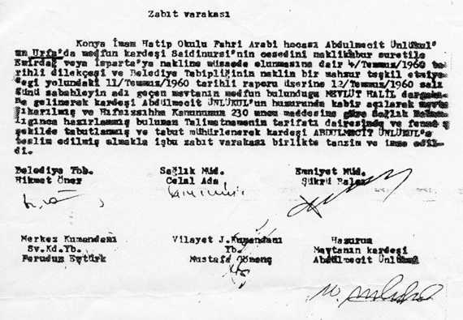
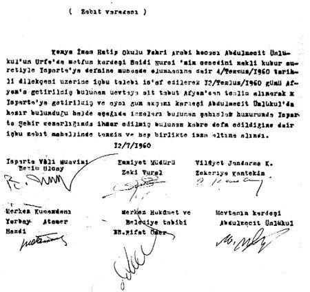

|
Bediüzzaman’ýn nakil ve defin belgesi |
  
|
|
Bediüzzaman’ýn nakil ve defin belgesi |
|
Bediüzzaman’ýn nakil ve defin belgesi

Bediüzzaman'ýn naaþýnýn Urfa'dan nakliyle ilgili olarak düzenlenen ve
Belediye Tabibi, Saðlýk Müdürü, Emniyet Müdürü, Merkez Kumandaný ve Vilâyet Jandarma Kumandaný ile
Bediüzzaman'ýn kardeþi Abdülmecid Ünlukul'un (zorla attýrýlan) imzalarýný taþýyan zabýt.

Mübarek cesedinin Isparta Þehir Mezarlýðýna defnedildiðini gösteren zabýt

Dilekçede bulunan imza meselesinin aslý Bizzat Abdülmecid ÜNLÜKUL ifadesi ile Halil USLU tarafýndan yazýlan ‘Bediüzzaman’ýn Kardeþi Abdülmecid Nursî’ Kitabýnda aþaðýdaki þekilde anlatýlmýþtýr:
....Naaþýn, asker nezaretinde, Þanlýurfa'dan çýkarýlýp, Isparta'ya defnine kadar geçen süreci Abdülmecid Nursî þöyle anlatýyor:
“Evimize bir sivil memur geldi. ‘Vali Bey sizi istiyor’ dedi. (Bu memur sonradan tesbit ettiðimize göre Konya Emniyeti Birinci Þube Komiseri Ýbrahim Yüksel'dir.) Arabayla vilayete gittim. Vilayet makamýnda üç general var idi. Ýkisi Cemal Tural, Refik Tulga idi. Diðerinin ismini þimdi hatýrlayamýyorum.
“Tanýþmadan sonra, Cemal Tural Paþa ile aramýzda þöyle bir konuþma oldu:
‘Ülkemiz kötü günler yaþýyor. Aðabeyini her geçen gün ziyaret edenler çoðalýyor. Bu itibarla kabrinin nakledeceðiz. Þu dilekçeyi imzala.’
“Dilekçeyi okuyunca tüylerim ürperdi. Az kalsýn bayýlacaktým.
‘Bu nasýl olur? Aðabeyimi, Üstadýmý, hiç olmazsa vefatýnda rahat býrakýn’ dedim.
‘Bizi buna mecbur eden kuvvet var. Ya imzalarsýn, ya da sonun korkunç olur’ dediler.
“Akabinde imzaladým.
“Konya Hava Meydanýna hareket edip, uçaða bindik. Diyarbakýr'a vardýk. Az bir moladan sonra ayrý bir uçak ile Urfa'ya gittik. Orada beni bir askerî vasýtaya bindirerek, askerî bir binaya götürüp bir odaya yerleþtirdiler. Ýkindi vakti gelmiþti. Akþam oldu, karanlýk bastý. Bir askerî jip geldi, içinde üç asker, bir yüzbaþý vardý ve beni alýp Halîlü'r-Rahman Dergâhýna götürdüler.
“Dergâhýn avlusuna girdik. Baktým iki tabut, dört asker, bir doktor var. Bana hitaben doktor bey dedi ki:
‘Merak edilecek bir þey yok. Buradan Hazret-i Üstadý fazla izdiham ve ziyaretçi yüzünden Ýç Anadolu'ya nakledecekler. onun için seni buraya getirdiler.’
“Ben artýk tutulmuþtum. Ölüyor gibiydim. Titriyordum ve aðlýyordum. Sabahtan beri de aðzýma hiçbirþey koymamýþtým. Doktor Bey askerlere dedi ki:‘Bu tabutu açýp Üstadý öbür tabuta alacaðýz.’
“Fakat, onlar da benim gibi çok korkmuþlardý ve ‘Biz yapamayýz’ dediler.
“Yine Doktor, ‘Korkmayýn, bizler emir kuluyuz. Bu, vazifemiz’ dedi.
“Ve askerler dergâh mezarlýðýndan çýkartýlan Üstadýn tabutunu açtýlar. Hazretim, artýk ben bitmiþtim. Ýçimden þöyle geçiyordu: ‘Þimdi Seyda’nýn kemikleri birbirine karýþmýþtýr.’
“Fakat heyhat, benim de yardýmýmý istediler ve böylece elimi kefene sürünce, Üstadýn sanki yeni vefat etmiþ gibi durduðunu fark ettim. Rahmetlik aðabeyimin yalnýz kefeninin aðýz kýsmý biraz sararmýþtý. Doktor Bey kefeni açtý, Üstadýn yüzü nur içindeydi."...